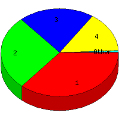

Week of 8/2/2009 to 8/8/2009: Top
5 of
5 File Types (Extensions)
Sorted by Access Count
Individual file types as determined by file extensions. All URLs that
do not contain an extension are counted as directories.

| Rank |
Type |
Accesses |
% |
Bytes |
% |
| 1 |
gif
|
63 |
36.21 |
952,434 |
29.39 |
| 2 |
htm
|
48 |
27.59 |
165,891 |
5.12 |
| 3 |
jpg
|
36 |
20.69 |
2,058,730 |
63.53 |
| 4 |
Directory (folder)
|
26 |
14.94 |
63,000 |
1.94 |
| 5 |
css
|
1 |
0.57 |
260 |
0.01 |